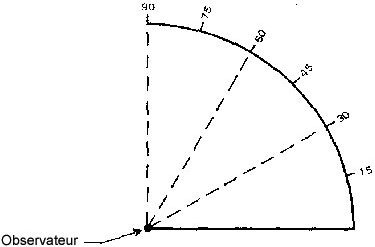
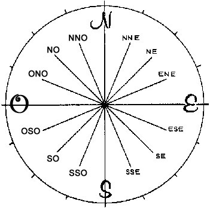
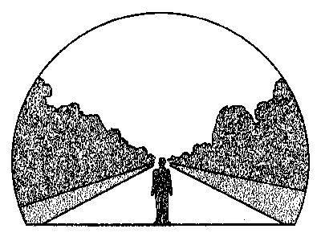
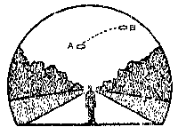

Jones, R. V.
AFR 80-17
| Règlement de la Force Aérienne |
Département de la Force Aérienne |
| N° 80-17 |
Washington (D.C.) 19 septembre 1966 |
Recherche et Développement
Objets Volants Non Identifiés (OVNI)
Ce réglement établit le programme de la Force Aérienne pour enquêter et analyser les ovnis au-dessus des Etats-Unis. Il fournit des procédures uniformes pour l'enquête et la diffusion d'informations. Les enquêtes et analyses prescrites sont directement liées à la responsabilité de la Force Aérienne de défense aériennes des Etats-Unis.
Le Programme Ovni demande un prompt reporting and rapid evaluation of
data for successful identification. Strict compliance with this
regulation is mandatory.
Ce réglement remplace l'AFR 200-2 du 20 juillet 1962
OPR: AFRSTA
Distribution : S
- Provisions générales
- Explication des termes
- Objectifs du programme
- Program Responsibilities
- Relations, information, contacts et communiqués publics
- Réponse à l'intérêt public
- Releasing Information
- PREPARING AND SUBMITTING REPORTS
- General Information
- Guidance in Preparing Reports
- Transmittal of Reports
- Negative or Inapplicable Data
- Comments of Investigating Officer
- Basic Reporting Data and Format
- Reporting Physical Evidence
Provision générales
-
Explication des termes : To insure proper and uniform usage of
terms in UFO investigations, reports, and analyses, an explanation of
common terms follows:
- Unidentified Flying Objects. Any aerial phenomenon or
object which is unknown or appears out of the ordinary to the
observer.
- Familiar or Known Objects/Phenomena. Aircraft, aircraft
lights, astronomical bodies (meteors, planets, stars, comets, sun,
moon), balloons, birds fireworks, missiles, rockets, satellites,
searchlights, weather phenomena (clouds, contrails, dust devils), and
other natural phenomena.
- Objectifs du programme : Air Force interest in UFOs is two-fold:
to determine if the UFO is a possible threat to the United States and
to use the scientific or technical data gained from study of UFO
reports. To attain these objectives, it is necessary to explain or
identify the stimulus which caused the observer to report his
observation as an unidentified flying object.
- Air Defense. The majority of UFOs reported to the Air Force
have been conventional or familiar objects which present no threat to
our security.
- It is possible that foreign countries may develop flying vehicles
of revolutionary configuration or propulsion.
- Frequently, some alleged UFOs are determined to be aircraft. Air
Defense Command (ADC) is responsible for identification
of aircraft. Except as aircraft are determined to be the stimulus
for a UFO report, aircraft are not to be reported under the
provisions of this regulation.
- Technical and Scientific. The Air Force will analyze
reports of UFOs submitted to it to attain the program objectives. In
this connection these facts are of importance:
- The need for further scientific knowledge in geophysics,
astronomy, and physics of the upper atmosphere which may be provided
by study and analysis of UFOs and similar aerial phenomena.
- The need to report all pertinent factors that have a direct
bearing on scientific analysis and conclusions of UFO sightings.
- The need and the importance of complete case information.
Analysis has explained all but a small percentage of the sightings
which have been reported to the Air Force. The ones that have not
been explained are carried statistically as "unidentified." Because
of the human factors involved and because analysis of a UFO sighting
depends primarily on a personal impression and interpretation by the
observer rather than on scientific data or facts obtained under
controlled conditions, the elimination of of all unidentifeds is
improbable. However, if more immediate, detailed, and objective data
on the unidentifieds had been available and promptly reported,
perhaps these, too, could have been identified.
- Responsabilités du programme :
- Program Monitor. The Deputy Chief of Staff, Research and
Development, is responsible for the overall program, evaluation of
investigative procedures, and the conduct of separate scientific
investigations.
- Resources. The Air Force Systems Command will support the
program with current resources within the Foreign Technology Division
(FTD) at Wright-Patterson Air Force Base, Ohio, to continue the
Project Blue Book effort. Other AFSC resources normally used by FTD
for this effort will. continue to be made available.
- Investigation. Each commander of an Air Force base will
provide a UFO investigative capability. When notice of a UFO sighting
is received, an investigation will be implemented to determine the
stimulus for the sighting. An Air Force base receiving the notice of
a UFO sighting may not be the base nearest the locale of the
sighting. In that event, the reported UFO sighting will be referred
to the Air Force base nearest the sighting for action.
EXCEPTIONS: FTD at Wright - Patterson Air Force Base, Ohio,
independently or with the help of pertinent Air Force activities, may
conduct any other investigation to conclude its analysis or findings.
HQ USAF may arrange for separate investigations.
- Analysis. FTD will:
- Analyze and evaluate all information and evidence reported to
bases on those UFOs which are not identified at the base level.
- Use other Government agencies, private industrial companies, and
contractor personnel to assist in analyzing and evaluating UFO
reports, as necessary.
- Findings. FTD, Wright-Patterson AFB, Ohio, will prepare a
final case report on each sighting reported to it after the data have
been properly evaluated. If the final report is deemed ,;ignificant,
FTD will send the report of its findings to AFSC (SCFA), Andrews AFB,
Wash DC 20331, which will send a report to HQ USAF (AFRDC), Wash DC
20330.
- Cooperation. All Air Force activities will cooperate with
UFO investigators to insure that pertinent information relative to
investigations of UFO sightings are promptly obtained. When feasible,
this will include furnishing air or ground transportation and other
assistance.
Relations, information, contacts et communiqués publics
-
Réponse à l'intérêt public : The Secretary of the Air
Force, Office of Information (SAF-OI), maintains contact with the
public and the news media on all aspects of the UFO program and
related activities. Private individuals or organizations desiring Air
Force interviews, briefings, lectures, of private discussions on UFOs
will be instructed to direct their requests to SAF-OI Air Force
members not officially connected with UFO investigations covered by
this regulation will refrain from any action or comment on UFO
reports Which may mis lead or cause the public to construe these
opinions as official Air Force findings.
- Releasing Information. SAF-OI is the agency responsible for
releasing information to the public and to the news media.
- Congressional and Presidential Inquiries. The Office of
Legislative Liaison will:
- With the assistance of SAF-OI, answer all Congressional and
Presidential queries regarding UFOs forwarded to the Air Force.
- Process requests from Congressional sources in accordance with AFR
11-7.
- SAF-OI will:
- Respond to correspondence from individuals requesting information on
the UFO Program and evaluations of sightings.
- Release information on UFO sightings and results of investigations to
the general public.
- Send correspondence queries which are purely technical and scientific
to FTD for information on which to base a reply.
- Exceptions. In response to local inquiries regarding UFOs
reported in the vicinity of an Air Force base, the base commander may
release information to the news media or the public after the
sighting has been positively identified. If the stimulus for the
sighting is difficult to identify at the base level, the commander
may state that the sighting is under investigation and conclusions
will be released by SAF-OI after the investigation is completed. The
commander may also state that the Air Force will review and analyze
the results of the investigation. Any further inquiries will be
directed to SAF-OI
SECTION C - PREPARING AND SUBMITTING REPORTS
-
General Information:
- The Deputy Chief of Staff, Research and Development, USAF and the
ADC have a direct and immediate interest in UFOs reported within the
US. All Air Force activities will conduct UFO investigations to the
extent necessary for reporting action (see paragraphs 9, 10, 11, and
12). Investigation may be carried beyond this point when the
preparing officer believes the scientific or public relations aspect
of the case war rants further investigation. In this case. the
investigator will coordinate his continued investigation with FTD.
- Paragraph 7 will be used as a guide for screenings,
investigations, and reportings. Paragraph 11 is an outline of the
reporting format.
- Inquiries should be referred to SAF-OI (see paragraph 5).
- If possible, all individual selected as a UFO investigator should
have a scientific or technical background and experience as an
investigator.
- Reports required by this regulation are excluded from assignment
of a reports control symbol in accordance with paragraph 3k, AFR
300-5.
- Guidance in Preparing Reports. The usefulness of a UFO
report depends largely on accuracy, timeliness, skill and
resourcefulness of the person who receives the initial information
and makes the report. Following are aids for sereening, evaluating
and reporting sightings:
- Activities receiving initial reports of aerial objects and
phenomena will screen the information to determine if the report
concerns a valid UFO as defined in paragraph ]a. Reports not falling,
within that definition do not require further action. Aircraft
flares, jet exhausts, condensation trails, blinking or steady lights
observed at night, lights circling near airports and airways, and
other aircraft phenomena should not be reported as they do not fall
within the definition of a UFO.
EXCEPTION: Reports of known objects will be made to FTD when
this information originally had been reported by local news media as
a UFO and the witness has contacted the Air Force. (Do NOT solicit
reports.) News releases should be included as an attachment with the
report (see paragraph 8c).
- Detailed study will be made of the logic, consistency, and
authenticity of the observer's report. An interview with the
observer, by persons preparing the report, is especially valuable in
determining the reliability of the source and the validity of the
information. Factors for particular attention are the observer's age,
occupation, and education, and whether he has a technical or
scientific background. A report that a witness is completely familiar
with certain aspects of a sighting should indicate specific
qualifications to substantiate such familiarity.
- The following procedures will assist the investigating officer
in completing the report and arriving at a conclusion as required in
paragraph 11.
- When feasible, contact local aircraft control and warning (ACW)
units, and pilots and crews of aircraft aloft at the time and place
of sighting Contact any persons or organizations that may have
alditional data on the UFO or can verify evidence - visual,
electronic, or other.
- Consult military or civilian weather forecasters for data on tracks
of weather balloons or any unusual meteorological activity that may
have a bearing on the stimulus for the UFO.
- Consult navigators and astronomers in the area to determine if any
astronomical body or phenomenon might account for the sighting.
- Consult military and civilian tower operators, air operations
units,, and airlines to determine if the sighting could have been an
aircraft. Local units of the Federal Aviation Agency (FAA) can be of
assistance in this regard.
- Consult persons who may know of experimental aircraft of
unusual configuration, rocket and guided missile firings, or aerial
tests in the area.
- Consult local and State police, county sheriffs, forest
rangers, and other civil officials who may have been in the area at
the time of the sighting or have knowledge of other witnesses.
- Transmittal of Reports:
- Timeliness. Report all information on UFOs promptly. Electrical
transmission with a "Priority" precedence is authorized.
- Submission of Reports. Submit multiple-addressed electrical
reports to:
- ADC.
- Nearest Air Division (Defense).
- FTD WPAFB. (First line of text: FOR TDETR.)
- CSAF. (First line of text: FOR AFRDC.)
- OSAF. (First line of text: FOR SAF-OI.)
- Written Reports. In the event followup action requires a
letter report, send it to FTD (TDETR), Wright-Patterson AFB, Ohio
45433. FTD will send the reports to interested organizations in the
US and to SAF-OI if required.
- Reports from Civilians. Advise civilians to report UFOs to the
nearest Air Force base.
- Negative or Inapplicable Data. If specific information is
lacking, refrain from using the words "negative" or "unidentified"
unless all logical leads to obtain the information outlined in
paragraph 11 have been exhausted. For example, the information on
weather conditions in the area, as requested in paragraph 11g, is
obtainable from the local military or civilian weather facility. Use
the phrase "not applicable (NA)" only when the question really does
not apply to the sighting under investigation.
10. Comments of Investigating Officer. This officer will make
an initial analysis and comment on the possible cause or identity of
the stimulus in a supporting statement. He will make every effort to
obtain pertinent items of information and to test all possible leads,
clues, and hypotheses. The investigating officer who receives the
initial report is in a better position to conduct an on-the-spot
survey and follow-up than subsequent investigative personnel and
analysts who may be far removed from the area and who may arrive too
late to obtain vital data or information necessary for firm
conclusions. The investigating officer's comments and conclusions
will be in the last paragraph of the report submitted through
channels. The reporting official will contact FTD (Area Code 513,
257-0916 or 257-6678) for verbal authority to continue
investigations.
11. Basic Reporting Data and Format. Show the abbreviation
"UFO" at the beginning of the text of all electrical reports and in
the subject of any follow-up written reports. Include required data
in all electrical reports, in the order shown below:
a. Description of the Object(s):
- Shape.
- Size compared to a known object.
- Color.
- Number.
- Formation, if more than one.
- Any discernible features or details.
- Tail, trail, or exhaust, including its
- Sound.
- Other pertinent or unusual features.
b. Description of Course of Object(s):
-
What first called the attention of observer(s) to the object(s)?
-
Angle of elevation and azimuth of object(s) when first observed. (Use
theodolite or compass measurement if possible.)
-
Angle of elevation of object (s) upon disappearance. (Use theodolite
or compass measurement if possible.)
-
Description of flight path and maneuvers of object(s). (Use
elevations and azimuth, not altitude.)
-
How did the object(s) disappear? (Instantaneously to the North, for
example.)
-
How long were the object(s) visible? (Be specific - 5 minutes, 1
hour, etc.)
c. Manner of Observation:
-
Use one or any combination of the following items: Ground-visual,
air-visual, ground-electronic, air-electronic. (If electronic,
specify type of radar.)
-
Statement as to optical aids (telescopes, binoculars, etc.) used and
description thereof.
-
If the sighting occurred while airborne, give type of aircraft,
identification number, altitude, heading, speed, and home station.
d. Time and Date of Sighting:
-
Greenwich date-time group of sighting and local time.
-
Light conditions (use one of the following terms: Night, day,
dawn, dusk).
e. Location of Observer(s). Give exact latitude and longitude
coordinates of each observer, and/or geographical position. In
electrical reports, give a position with reference to a known
landmark in addition to the coordinates. For example, use "2 mi N of
Deeville"; "3 mi SW of Blue Lake," to preclude errors due to teletype
garbling of figures.
f. Identifying Information on Observer (s) :
-
Civilian-Name, age, mailing address, occupation, education and
estimate of reliability.
-
Military-Name, grade, organization, duty, and estimate of
reliability.
g. Weather and Winds-Aloft Conditions at Time and Place of Sightings:
-
Observer(s) account of weather conditions.
-
Report from nearest AWS or US Weather Bureau Office of wind direction
and velocity in degrees and knots at surface, 6,000', 10,000',
16,000', 20,000', 30,000', 50,000', and 80,000', if available.
- Ceiling.
- Visibility.
- Amount of cloud cover.
- Thunderstorms in area and quadrant in which located.
- Vertical temperature gradient.
h. Any other unusual activity or condition, meteorological,
astronomical, or otherwise, that might account for the sighting.
i. Interception or identification action taken (such action is
authorized whenever feasible and in compliance with existing air
defense directives).
j. Location, approximate altitude, and general direction of flight of
any air traffic or balloon releases in the area that might possibly
account for the sighting.
k. Position title and comments of the preparing officer, including
his preliminary analysis of the possible cause of the sighting(s).
(See paragraph 10.)
12. Reporting Physical Evidence:
a. Photographic:
-
Still Photographs. Forward the original negative to FTD (TDETR),
Wright-Patterson AFB, Ohio 45433, and indicate the place, time, and
date the photograph was taken.
-
Motion Pictures. Obtain the original film. Examine the film
strip for apparent cuts, alterations, obliterations, or defects. In
the report comment on any irregularities, Particularly in films
received from other than official sources.
-
Supplemental Photographic Information. Negatives and prints often are
insufficient to provide certain valid data or Permit firm
conclusions. Information that aids in plotting or in estimating
distances, apparent size and nature of object, probable velocity, and
movements includes:
-
Type and make of camera.
-
Type, focal length, and make of lens.
-
Brand and type of film.
-
Shutter speed used.
-
Lens opening used; that is, "f" stop.
-
Filters used.
-
Was tripod or solid stand used.
-
Was "panning" used.
-
Exact direction camera was pointing with relation to true North, and
its angle with respect to the ground.
-
Other Camera Data. If supplemental information is unobtainable, the
minimum camera data required are the type of camera, and the smallest
and largest "f" stop and shutter speed readings of the camera.
-
Radar. Forward two copies of each still camera photographic print.
Title radarscope photographic prints per AFR 95-7. Classify
radarscope photographs per AFR 205-1.
NOTE: if possible, develop film before forwarding. Mark
undeveloped film clearly to indicate this fact, to avoid destruction
by exposure through mail channels to final addressees.
b. Material. Air Force echelons receiving suspected or actual
UFO material will safeguard it to prevent any defacing or alterations
which might reduce its value for intelligence examination and
analysis.
c. Photographs, Motion Pictures and Negatives Submitted by
Individuals. Individuals often submit photographic and motion
picture material as part of their UFO reports. All original material
submitted will be returned to the individual after completion of
necessary studies, analysis, and duplication by the Air Force.
AFR 80-17
By Order of the Secretary of the Air Force
| Official |
J. P. McCONNELL |
| |
General, U.S. Air Force |
| |
Chief of Staff |
R. J. PUGH
Colonel, USAF
Director of Administrative Services
| CHANGE |
AFR 80-17A |
| AIR FORCE REGULATION |
DEPARTMENT OF THE AIR FORCE |
| NO. 80-17A |
Washington, 8 November 1966 |
Research And Development
UNIDENTIFIED FLYING OBJECTS (UFO)
AFR 80-17, 19 September 1966, Is changed as follows:
3c. EXCEPTIONS: FTD at Wright-Patterson... for separate
investigations. The University of Colorado will, under a research
agreement with the Air Force, conduct a study of UFOs. This program
(to run approximately 15 months) will be conducted independently and
without restrictions. The university will enlist the assistance of
other conveniently located institutions that can field investigative
teams. All UFO reports will be submitted to the University of
Colorado, which will be given the fullest cooperation of all UFO
Investigating Officers. Every effort will be made to keep all UFO,
reports unclassified. However, if it is necessary to classify a
report because of method of detection or other factors not related to
the UFO, a separate report including all possible information will be
sent to the University of Colorado.
8b(6). University of Colorado, Boulder, Colorado 80302, ATTN: Dr.
Condon. (Mail copy of message form.)
8e. Negative or Inapplicable Data. Renumber as paragraph 9.
11k. Position title, name, rank, official address telephone area
code, office and home phone, and comments of the preparing officer,
including his preliminary analysis of the possible cause of the
sighting(s). (See paragraph 10.)
By Order of the Secretary of the Air Force
| Official |
J. P. McCONNELL |
| |
General, U.S. Air Force |
| |
Chief of Staff |
R. J. PUGH
Colonel, USAF
Director of Administrative Services
DISTRIBUTION: S
CHANGE 1, AFR 80-17
| AIR FORCE REGULATION |
DEPARTMENT OF THE AIR FORCE |
| NO. 80-17(C1) |
Washington, 26 October 1967 |
Research And Development
UNIDENTIFIED FLYING OBJECTS (UFO)
AFR 80-17, 19 September 1966, is changed as follows:
*3c. Investigation. Each commander of an Air Force base within
the United States will provide a UFO... sighting for action.
3c. EXCEPTIONS: FTD at Wright-Patterson... for separate
investigations. The University of Colorado, under a research
agreement with the Air Force, will conduct a study of UFOs. This
program (to run approximately 15 months) will be conducted
independently and without restrictions. The university will enlist
the assistance of other conveniently located institutions that can
field investigative teams. All UFO reports will be submitted
to the University of Colorado, which will be given the fullest
cooperation of all UFO Investigating Officers. Every effort will be
made to keep all UFO reports unclassified. However, if it is
necessary to classify a report because of method of detection or
other factors not related to the UFO, a separate report including all
possible information will be sent to the University of Colorado.
*6a. The Deputy Chief of Staff,... reported within the United
States. All Air Force activities within the United States will
conduct UFO... investigation with FTD.
8b(6). University of Colorado, Boulder CO 80302, Dr. Condon. (Mail
copy of message form.)
*8c. Reports. If followup action is required on electrically
transmitted reports prepare an investigative report on AF Form 117,
"Sighting of Unidentified Phenomena Questionnaire," which will be
reproduced locally on 8" x 10½" paper in accordance with
attachment 1. (9 pages). Send the completed investigative report to
FTD (TDETR), Wright-Patterson AFB OH 45433. FTD will send the reports
to interested organizations in the United States and to Secretary of
the Air Force (SAFOI), Wash DC 20330, if required.
8e. Negative or Inapplicable Data. Renumber as paragraph 9.
11k. Position title, name, rank, official address, telephone area
code, office and home telephone, and comments of the preparing
officer, including his preliminary analysis of the possible cause of
the sighting. (See paragraph 10.)
By Order of the Secretary of the Air Force
| Official |
J. P. McCONNELL, General, USAF |
| |
Chief of Staff |
| |
| R. J. PUGH, Colonel, USAF |
1 Attachment |
| Director of Administrative Services |
AF Form 117, "Sighting of Unidentified Phenomena Questionnaire"
|
This regulation supersedes AFR 80-17A, 8 November 1966.
OPR: AFRDDG
DISTRIBUTION: S
AFR 80-17 (C1)
| Questionnaire d'observation de phénomènes non identifiés |
BUDGET BUREAU APPROVAL
NUMBER 21-R258 |
|
| Ce questionnaire a été préparé afin que vous puissiez fournir à l'U.S. Air Force autant d'information que possible concernant le phénomène non identifié que vous avez observé. Veuillez essayer de répondre à toutes les questions. L'information que vous fournissez sera utilisée dans des buts de recherche. Votre nom ne sera pas utilisé en relation avec quelque de vos déclarations ou conclusions sans votre permission. Retournez à l'enquêteur de la base de l'Air Force pour transmission à la FTD (TDETR), Wright-Patternson AFB, OHIO 45433, IAW AFR 80-17 (si des feuilles supplémentaires sont nécessaire pour raconter ou de schémas attacher avec sûreté à ce formulaire avec votre nom pour identification). |
- Quand avez-vous vu le phénomène ?
|
Jour |
______ |
Mois |
______ |
Année |
______ |
|
- A quelle heure avez-vous vu le phénomène la 1ère fois ?
|
Heure |
______ |
Minutes |
______ |
[ ] A.M. |
[ ] P.M. |
|
- A quelle heure avez-vous vu le phénomène la dernière fois ?
|
Heure |
______ |
Minutes |
______ |
[ ] A.M. |
[ ] P.M. |
|
|
Zone horaire |
[ ] Economies de jour |
[ ] Standard |
| |
[ ] Est |
[ ] Central |
[ ] Montagne |
[ ] Pacifique |
[ ] Autre |
|
- Où étiez-vous lorsque vous avez vu le phénomène ? Si en ville donnez l'adresse de rue la plus proche et indiquez sur une carte dessinée à la main où vous vous trouviez avec référence à l'adresse. Si en campagne, identifiez l'autoroute où vous vous trouviez ou étiez proche et essayez de fixer une distance et une direction d'après une marque au sol reconnaissable.
|
-  Imaginez que vous soyez au point montré dans le schéma. Placez un "A" sur la ligne courbe pour montrer à quelle hauteur le phénomène était au-dessus de l'horizon, ou ligne du ciel, lorsque vous l'avez vu pour la 1ère fois. Placez un "B" sur la même ligne courbe pour montrer à quelle hauteur au-dessus de l'horizon le phénomène fut vu pour la dernière fois.
|
| 6a. Imaginez maintenant que vous êtes au centre de la rose du compas. Placez un "A" sur le compas pour indiquer la direction vers le phénomène lorsque vous l'avez vu pour la 1ère fois. Placez un "B" sur le compas pour indiquer la direction vers le phénomène lorsque vu pour la dernière fois. |
- Dans le schéma ci-dessosu, placez un "A" à la position du phénomène lorsque vous l'avez vu pour la 1ère fois, et un "B" à la position du phénomène lorsque vous l'avez vu pour la dernière fois. Reliez le "A" et le "B" avec une ligne pour approximer le mouvement du phénomène entre "A" et "B". C'est-à-dire, représentez schématiquement si le mouvement est apparu comme droit, courbe ou en zig-zag. Référez-vous au schéma plus petit comme exemple de la manière de compléter le plus grand schéma.
|
| 8. |
WHERE WERE YOU WHEN YOU SAW THE PHENOMENON?
(Check appropriate blocks)
|
|
|
| |
OUTDOORS |
|
IN BUSINESS SECTION OF CITY |
| |
IN BUILDING |
|
IN RESIDENTIAL SECTION OF CITY |
| |
IN CAR
[ ]AS DRIVER
[ ]AS PASSENGER
|
|
IN OPEN COUNTRYSIDE |
| |
IN BOAT |
|
NEAR AIRFIELD |
| |
IN AIRPLANE
[ ]AS PILOT
[ ]AS PASSENGER
|
|
FLYING OVER CITY |
| |
OTHER |
|
FLYING OVER OPEN COUNTRY |
| |
OTHER |
|
| A. |
IF YOU WERE IN A VEHICLE, COMPLETE THE FOLLOWING:
|
|
|
|
WHAT DIRECTION WERE YOU MOVING?
|
HOW FAST WERE YOU MOVING?
|
| |
NORTH |
|
EAST |
| |
SOUTH |
|
WEST |
DID YOU STOP ANYTIME WHILE OBSERVING THE PHENOMENON?
[ ]YES [ ]NO
|
| |
NORTHEAST |
|
SOUTHEAST |
| |
NORTHWEST |
|
SOUTHWEST |
|
EXPLAIN WHETHER SUCH MOVEMENT AFFECTS YOUR SKETCHES IN ITEMS 5 AND 6.
|
|
DESCRIBE TYPE OF VEHICLE YOU WERE IN AND TYPE OF ROAD, TERRAIN OR
BODY OF WATER YOU TRAVERSED DURING THE SIGHTING. STATE WHETHER
WINDOWS OR CONVERTIBLE TOP WERE UP OR DOWN.
|
|
HOW MUCH OTHER TRAFFIC WAS THERE?
|
|
DID YOU NOTICE ANY AIRPLANES? [ ]YES [ ]NO.
IF "YES," DESCRIBE WHEN THEY WERE IN SIGHT RELATIVE TO THE TIME OF
SIGHTING OF THE PHENOMENON AND WHERE THEY WERE IN THE SKY RELATIVE
TO THE POSITION OF THE PHENOMENON.
|
|
| A. |
HOW LONG WAS THE PHENOMENON IN SIGHT?
|
|
|
| LENGTH OF TIME |
|
CERTAIN OF TIME |
|
NOT VERY SURE |
| |
FAIRLY CERTAIN |
|
JUST A GUESS |
|
|
|
WAS THE PHENOMENON IN SIGHT CONTINUOUSLY? [ ]YES
[ ]NO. IF "NO," INDICATE WHETHER THIS IS DUE TO
YOUR MOVEMENT OR THE BEHAVIOR OF THE PHENOMENON, AND DESCRIBE SUCH
MOVEMENT OR BEHAVIOR. INDICATE DISAPPEARANCES ON PREVIOUS SKETCHES.
|
|
Attachment 1
|
(Becomes Attachment 1 to AFR 80-17
|
|
| AFR 80-17 (C1) |
| 10. |
IF THERE WERE MORE THAN ONE PHENOMENON, HOW MANY WERE THERE?
DRAW A PICTURE TO SHOW HOW THEY WERE ARRANGED. DID THE ARRANGEMENT
CHANGE DURING THE SIGHTING?
|
|
|
| 11. |
CONDITIONS (Check appropriate blocks.)
|
|
|
|
|
| |
DAY |
|
CUMULUS CLOUDS (Low fluffy) |
|
FOG OR MIST |
| |
TWILIGHT |
|
CIRRUS CLOUDS
(High fleecy or
herringbone) |
|
HEAVY RAIN |
| |
NIGHT |
|
LIGHT RAIN OR DRIZZLE |
| |
CLEAR |
|
NIMBUS CLOUDS (Rain) |
|
HAIL |
| |
PARTLY CLOUDY |
|
CUMULONIMBUS CLOUDS
(Thunderstorms) |
|
SNOW OR SLEET |
| |
COMPLETELY OVERCAST |
|
UNKNOWN |
|
|
|
HAZE OR SMOG |
|
NONE OF THE ABOVE |
|
|
C. IF THE SIGHTING WAS AT TWILIGHT OR NIGHT, WHAT DID
YOU NOTICE ABOUT THE STARS AND MOON?
|
|
|
|
| |
NONE |
|
BRIGHT MOONLIGHT |
|
NO MOONLIGHT |
| |
A FEW |
|
MOON WITH HALO |
|
UNKNOWN |
| |
MANY |
|
MOON HIDDEN BY CLOUDS
PARTIAL (New or quarter)
|
|
|
| |
UNKNOWN |
|
|
D. IF THE SIGHTING WAS IN DAYLIGHT, WAS THE SUN VISIBLE?
[ ]YES [ ]NO. IF "YES," WHERE WAS THE SUN
AS YOU FACED THE PHENOMENON?
|
|
| |
IN FRONT OF YOU |
|
TO YOUR RIGHT |
|
OVERHEAD (Near noon) |
| |
IN BACK OF YOU |
|
TO YOUR LEFT |
|
UNKNOWN |
|
E. SPECIFY THE MAJOR SOURCE OF ILLUMINATION PRESENT DURING
THE SIGHTING, SUCH AS THE SUN, HEADLIGHTS OR STREET LAMP, ETC. FOR
TERRESTRIAL ILLUMINATION, SPECIFY DISTANCE TO LIGHT SOURCE.
|
|
12. GIVE A BRIEF DESCRIPTION OF THE PHENOMENON, INDICATING
WHETHER IT APPEARED DARK OR LIGHT, WHETHER IT REFLECTED LIGHT OR WAS
SELF-LUMINOUS AND WHAT COLORS YOU NOTICED. DESCRIBE YOUR IMPRESSION OF
WHETHER IT WAS SOLID OR TRANSPARENT, WHETHER EDGES WERE SHARP OR
FUZZY. DESCRIBE THE SHAPE OR INDICATE IF IT APPEARED AS A POINT OF
LIGHT. INDICATE COMPARISONS WITH OTHER OBSERVED OBJECTS, LIKE STARS,
A LIGHT OR OTHER OBJECT IN YOUR FIELD OF VIEW.
|
|
Attachment 1
|
(Becomes Attachment 1 to AFR 80-17
|
|
| AFR 80-17 (C1) |
|
|
| MOVE IN A STRAIGHT LINE? |
|
|
|
| STAND STILL AT ANY TIME? |
|
|
|
| SUDDENLY SPEED UP AND RUN AWAY? |
|
|
|
| BREAK UP IN PARTS AND EXPLODE |
|
|
|
| CHANGE COLOR |
|
|
|
| GIVE OFF SMOKE |
|
|
|
| CHANGE BRIGHTNESS |
|
|
|
| CHANGE SHAPE? |
|
|
|
| FLASH OR FLICKER? |
|
|
|
| DISAPPEAR AND REAPPEAR? |
|
|
|
| SPIN LIKE A TOP? |
|
|
|
| MAKE A NOISE? |
|
|
|
| FLUTTER OR WOBBLE? |
|
|
|
|
|
14. WHAT DREW YOUR ATTENTION TO THE PHENOMENON?
|
|
A. HOW DID IT FINALLY DISAPPEAR?
|
|
B. DID THE PHENOMENON MOVE BEHIND OR IN FRONT OF
SOMETHING, LIKE A CLOUD, TREE, OR BUILDING AT ANY TIME?
[ ]YES [ ]NO. IF "YES," DESCRIBE.
|
|
Attachment 1
|
(Becomes Attachment 1 to AFR 80-17
|
|
| AFR 80-17 (C1) |
15. DRAW A PICTURE THAT WILL SHOW THE SHAPE OF THE PHENOMENON.
INCLUDE AND LABEL ANY DETAILS THAT MIGHT HAVE APPEARED AS WINGS OR
PROTRUSIONS, AND INDICATE EXHAUST OR VAPOR TRAILS. INDICATE BY AN ARROW
THE DIRECTION THE PHENOMENON WAS MOVING.
|
|
16. WHAT WAS THE ANGULAR SIZE? HOLD A MATCH AT ARM'S
LENGTH IN FRONT OF A KNOWN OBJECT, SUCH AS A STREET LAMP OR THE MOON.
NOTE HOW MUCH OF THE OBJECT IS COVERED BY THE HEAD OF THE MATCH.
NOW IF YOU HAD BEEN ABLE TO PERFORM THIS EXPERIMENT AT THE TIME OF
THE SIGHTING, ESTIMATE WHAT FRACTION OF THE PHENOMENON WOULD HAVE
BEEN COVERED BY THE MATCH HEAD.
|
|
Attachment 1
|
(Becomes Attachment 1 to AFR 80-17
|
|
| AFR 80-17 (C1) |
|
17. DID YOU OBSERVE THE PHENOMENON THROUGH ANY OF THE
FOLLOWING? INCLUDE INFORMATION ON MODEL, TYPE, FILTER,LENS
PRESCRIPTION OR OTHER APPLICABLE DATA.
|
|
| |
EYEGLASSES |
|
CAMERA VIEWER |
| |
SUNGLASSES |
|
BINOCULARS |
| |
WINDSHIELD |
|
TELESCOPE |
| |
SIDE WINDOW OF VEHICLE |
|
THEODOLITE |
| |
WINDOWPANE |
|
OTHER |
|
|
A. DO YOU ORDINARILY WEAR GLASSES? [ ]YES [ ]NO
|
B. DO YOU USE READING GLASSES [ ]YES [ ]NO
|
18. WHAT WAS YOUR IMPRESSION OF THE SPEED OF THE PHENOMENON?
GIVE ESTIMATE OF SPEED ____________
|
19. WHAT WAS YOUR IMPRESSION OF THE DISTANCE OF THE PHENOMENON?
GIVE ESTIMATE OF DISTANCE ____________
|
|
20. IN ORDER THAT WE MAY OBTAIN AS CLEAR A PICTURE AS
POSSIBLE OF WHAT YOU SAW, DESCRIBE IN YOUR OWN WORDS A COMMON
OBJECT OR OBJECTS WHICH, WHEN PLACED IN THE SKY, SIMILAR TO WHERE
YOU NOTED THE PHENOMENON, WOULD BEAR SOME RESEMBLANCE TO WHAT YOU
SAW. DESCRIBE SIMILARITIES AND DIFFERENCES BETWEEN THE COMMON
OBJECT AND WHAT YOU SAW.
|
|
21. DID YOU NOTICE ANY ODER, NOISE, OR HEAT EMANATING FROM
THE PHENOMENON OR ANY EFFECT ON YOURSELF, ANIMALS OR MACHINERY IN
THE VICINITY? [ ]YES [ ]NO. IF "YES," DESCRIBE.
|
|
A. DID THE PHENOMENON DISTURB THE GROUND OR LEAVE ANY
PHYSICAL EVIDENCE? [ ]YES [ ]NO. IF "YES," DESCRIBE.
|
|
|
PAGE 7 OF 9 PAGES
|
Attachment 1
|
(Becomes Attachment 1 to AFR 80-17
|
|
| AFR 80-17 (C1) |
22. HAVE YOU EVER SEEN THIS OR A SIMILAR PHENOMENON
BEFORE? [ ]YES [ ]NO. IF "YES,"
GIVE DATE AND LOCATION.
|
|
23. WAS ANYONE WITH YOU AT THE TIME YOU SAW THE PHENOMENON?
[ ]YES [ ]NO.
IF "YES," DID THEY SEE IT TOO? [ ]YES [ ]NO.
|
|
A. LIST THEIR NAMES AND ADDRESSES.
|
|
| 24. |
GIVE THE FOLLOWING INFORMATION ABOUT YOURSELF
|
|
|
LAST NAME, FIRST NAME, MIDDLE NAME
|
ADDRESS (Street, City, State and Zip Code)
|
TELEPHONE (Area code and number)
|
AGE
|
|
MALE |
|
FEMALE |
|
INDICATE ADDITIONAL INFORMATION INCLUDING OCCUPATION AND ANY
EXPERIENCE WHICH MAY BE PERTINENT
|
|
25. WHEN AND TO WHOME DID YOU REPORT THAT
YOU HAD SIGHTED THIS PHENOMENON?
NAME ____________________ DAY _______ MONTH _______ YEAR _____
|
|
26. DATE YOU COMPLETED THIS QUESTIONNAIRE
DAY _______ MONTH _______ YEAR _____
|
|
|
PAGE 8 OF 9 PAGES
|
Attachment 1
|
(Becomes Attachment 1 to AFR 80-17
|
|
| AFR 80-17 (C1) |
27. INFORMATION WHICH YOU FEEL IS PERTINENT BUT WHICH IS NOT
ADEQUATELY COVERED IN THIS QUESTIONNAIRE. ALTERNATIVELY PROVIDE A
NARRATIVE EXPLANTION OF THE SIGHTING.
|
|
|
PAGE 9 OF 9 PAGES
|
Attachment 1
|
(Becomes Attachment 1 to AFR 80-17
|
|
CHANGE 2, AFR 80-17
| AIR FORCE REGULATION |
DEPARTMENT OF THE AIR FORCE |
| NO. 80-17(C2) |
Washington, 30 September 1968 |
Research And Development
UNIDENTIFIED FLYING OBJECTS (UFO)
AFR 80-17, 19 September 1966 and change 1, 26 October 1967, are
changed as follows:
8b(3). FTD WPAFB. (First line of text: FOR TDPT (UFO).)
8b(6). Delete.
By Order of the Secretary of the Air Force
| Official |
J. P. McCONNELL, General, USAF |
| |
Chief of Staff |
JOHN F.RASH, Colonel, USAF
Director of Administrative Services
DISTRIBUTION: S